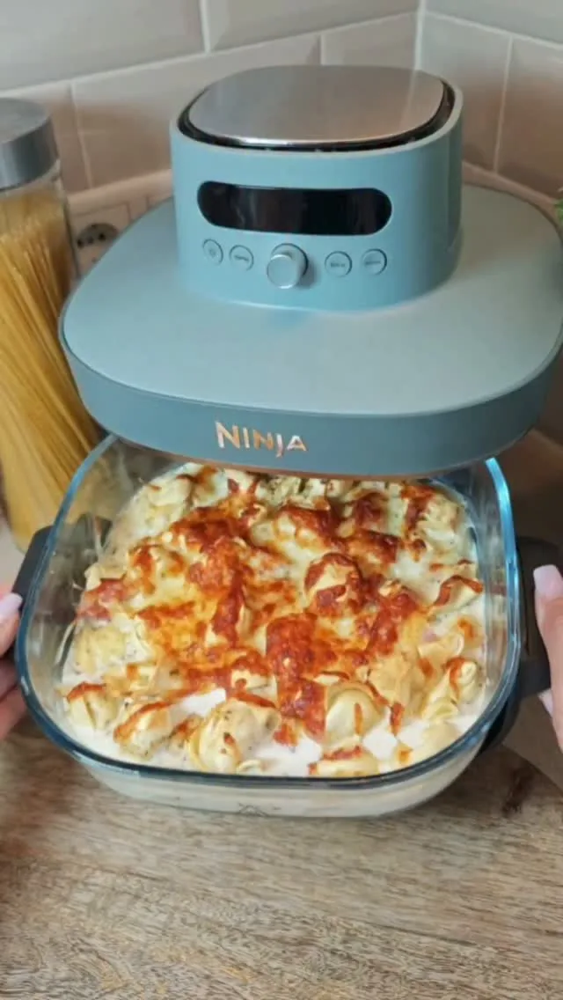

Anzeige
 AnzeigeNinja CRISPi PRO XL · MoosgrünDie Glas-Heißluftfritteuse aus dem Video.Produkt ansehen ↗
AnzeigeNinja CRISPi PRO XL · MoosgrünDie Glas-Heißluftfritteuse aus dem Video.Produkt ansehen ↗
Cremige Tortellini mit Schinken aus der Ninja CRISPi
Cremige Tortellini mit Schinken aus dem Ninja CrispiPro – ideal für stressige Tage, denn die Vorbereitung ist in wenigen Minuten erledigt!
- 2–3 Personen
- 7 Zutaten
- 5 Schritte
Zur Zubereitung Video ansehen ↗
Zutaten
AnzeigeNinja CRISPi PRO XL · MoosgrünDie Glas-Heißluftfritteuse aus dem Video.Produkt ansehen ↗Als Amazon-Partner verdiene ich an qualifizierten Verkäufen.
Zubereitung
- Tortellini und Schinken in die Ninja CrispiPro geben.
- Sahne, Milch, Parmesan und italienische Kräuter miteinander verrühren.
- Die Soße über die Tortellini gießen und alles kurz vermischen.
- Mit dem geriebenen Käse bestreuen.
- Bei 180 °C insgesamt ca. 15 Minuten überbacken. Nach etwa der Hälfte der Zeit einmal vorsichtig umrühren, damit alles gleichmäßig gart und der Käse schön goldbraun wird.